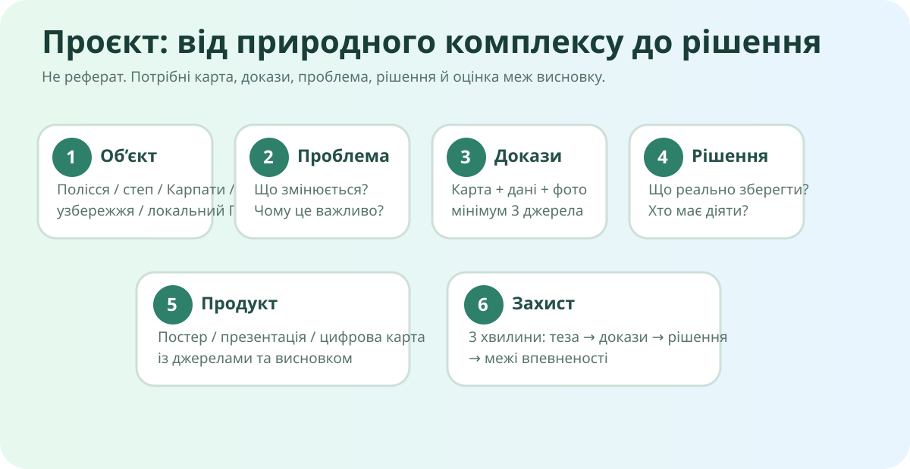

Локальна канва проєкту: об’єкт → проблема → докази → рішення → продукт → захист.
Проєктне питання
Це означає, що у фінальному продукті мають бути одночасно: природна цінність, реальний тиск або ризик, карта, надійні джерела та рішення, яке можна захистити аргументами.
Що саме Ви досліджуєте?
Просторовий доказ
OpenStreetMap — базова карта. Для тематичних доказів використовуйте також супутникові знімки, карти лісів, вод, природоохоронних територій або кліматичних ризиків.
Мінімум три незалежні джерела
Бажана комбінація: 1 карта + 1 набір даних/офіційне джерело + 1 фото або супутниковий знімок. Три сайти, які просто повторюють одне одного, — це все ще один доказ у трьох вкладках.
Природна цінність
Які компоненти комплексу взаємопов’язані: рельєф, клімат, води, ґрунти, рослинність, тваринний світ?
Тиск / ризик
Що саме змінює систему? Назвіть механізм, а не лише наслідок.
Рішення
Хто може діяти? Яке рішення реалістичне? Який побічний ефект воно може мати?
Оберіть формат
За КТП результатом може бути презентація, постер або цифрова карта з посиланнями та висновком. fileciteturn73file2L57-L61
Формат ще не обрано.
Обов’язкові елементи
Готовність: 0%
Рубрика • 10 балів
| Критерій | Бали | Що означає максимальний результат |
|---|---|---|
| Карта й просторовий аналіз | 0–2 | Карта не декоративна: з неї отримано конкретний доказ. |
| Якість джерел і доказів | 0–2 | 3+ незалежні надійні джерела, кожне прив’язане до твердження. |
| Причинно-наслідкове пояснення | 0–2 | Показано механізм змін природного комплексу. |
| Рішення | 0–2 | Реалістичне, адресне, враховує компроміси й побічні наслідки. |
| Висновок і захист | 0–2 | Стисла теза, докази, пояснення, межі впевненості. |
3 хвилини без читання слайдів
- 30 с: об’єкт і проблема.
- 60 с: два найсильніші докази.
- 60 с: рішення та чому воно працюватиме.
- 30 с: що Ви ще не знаєте / де межа висновку.
Питання опонента
Самооцінка перед здачею
Домашнє завдання
Завершити обраний проєктний продукт і підготувати 3-хвилинний захист. Перевірити активність усіх посилань, підписати карти/фото та додати короткий список джерел. Електронний підручник/матеріали: Всеукраїнська школа онлайн.